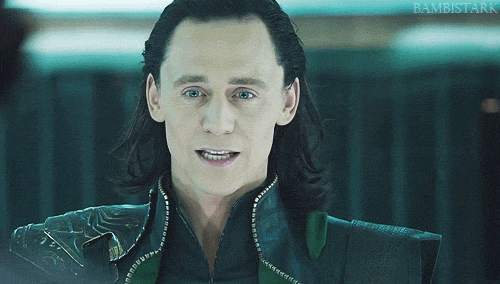
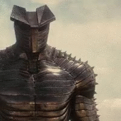
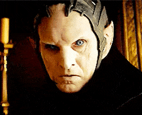

Bring the Thunder

Loki

My brother Loki, the trickster. Adopted by my father, Odin. He is actually a frost giant. There was one time when we were children, he transformed himself into a snake, and he knows that I love snakes. So, I went to pick up the snake to admire it and he transformed back into himself and he was like, "Yeah, it's me!". And he stabbed me. We were eight at the time.
The Destroyer

Stupid Destroyer. Released by Loki to kill me on Midgard. Unfortunately for him, he stood against the son of Odin. To this day I still use the scraps of his head to hang my hammer.
Malektih

He tried to use the Aether to destroy Midgard, and he 'killed' my brother Loki. Is it a shame he could only be killed once. I have no pity for Malekith.